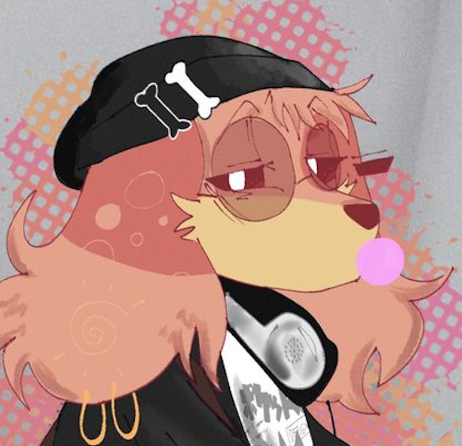

Développer mon jeu
Créer un jeu abouti, le publier et parvenir à en vivre.
Mon histoire, mes passions et mes ambitions.

Créateur et passionné.
Français / PolonaisJe suis franco-polonais et bilingue. Je suis quelqu’un de plutôt introverti, calme et discret, mais je peux devenir très expressif lorsque je suis avec mes meilleurs amis.
Je suis ouvert d’esprit, honnête et toujours prêt à discuter dans le respect.
La musique tient une place énorme dans ma vie. Je suis un véritable « Musicholic ».
Je ne passe pas énormément de temps à jouer aux jeux vidéo, même si je suis passionné par leur conception. Jaime aussi organiser et faire évoluer des communautés Discord.
Créer un jeu abouti, le publier et parvenir à en vivre.
Gérer un serveur important ou rejoindre le haut staff dune communauté de plus de 100 000 membres.
Explorer un jour le métier de comédien de doublage.
Imaginer des projets ambitieux et apprendre à les concrétiser.
Une partie essentielle de mon quotidien.
Imaginer et construire de nouveaux univers.
Gérer des équipes, améliorer des communautés et concevoir des systèmes.
Créer, tester, comprendre et perfectionner.